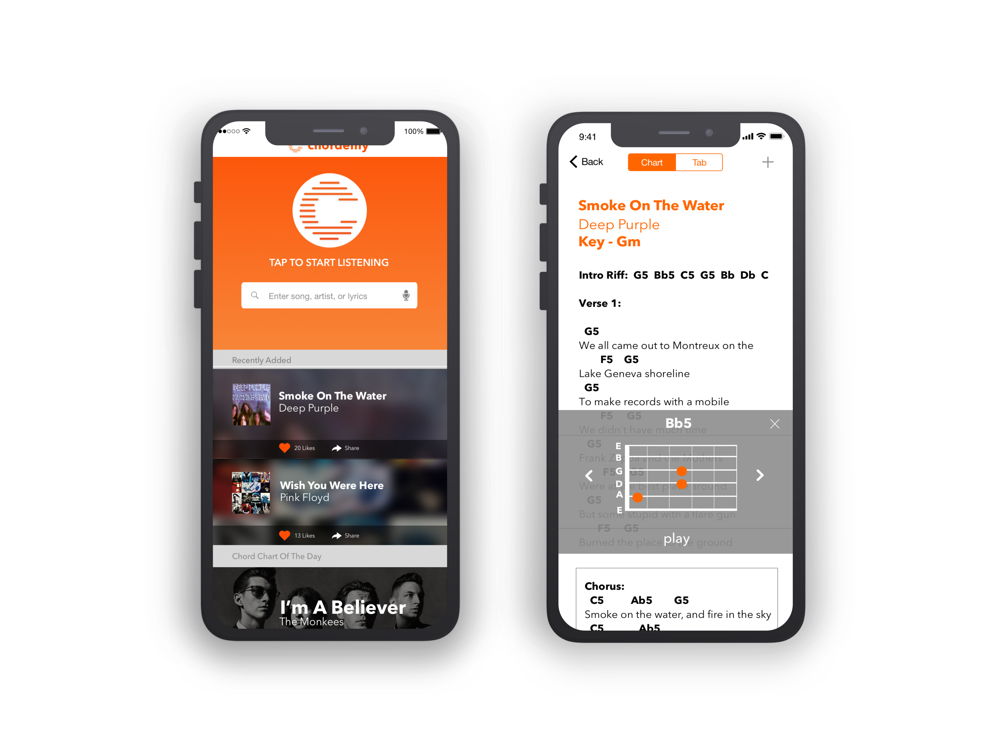

Hello, I'm Gentry Baird. I am currently a visual and UX designer for IBM Analytics.
Chordemy

×
Chordemy
Chordemy is a musician companion app which allows a user to find guitar tabs and chords, play along with the song. It also analyzes the musician's accuracy, giving them instructional feedback on how to improve their playing.